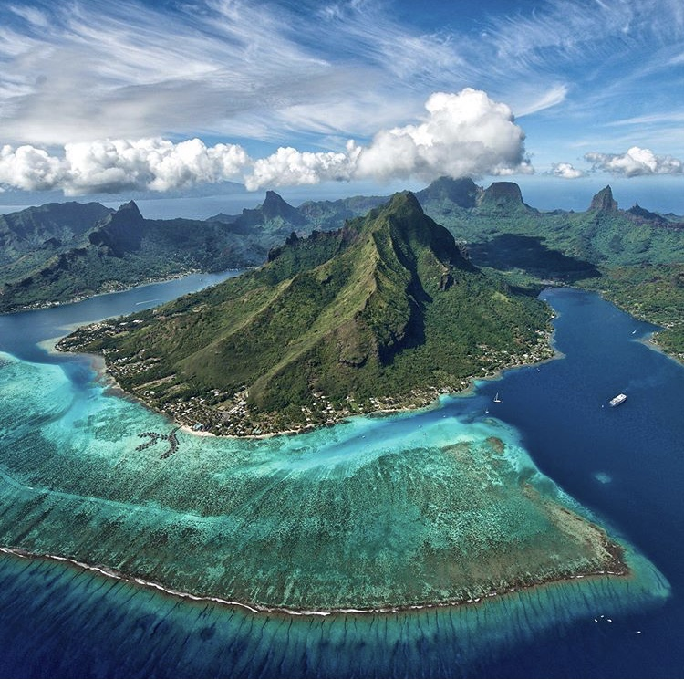

I love web development 💻 (most of the time), music 🎵, surf 🏄🏼‍♀️and dive 🏝
My happy place|  |
TahitiCalm blue lagoons, white sand beaches, friendly people, swaying coconut trees and black pearl farms – French Polynesia is a paradise with amazing beauty. |
ColoradoColorado is noted for its vivid landscape of mountains, forests, high plains, mesas, canyons, plateaus, rivers and desert lands. |
|
Koh RongKoh Rong is a group of islands just off the Cambodian coast, near Sihanoukville, which offers 23 amazing white-sand beaches bordering azure seas. It is still very much an unspoilt paradise, with 5 tiny islands in the area, 3 of which are uninhabited |